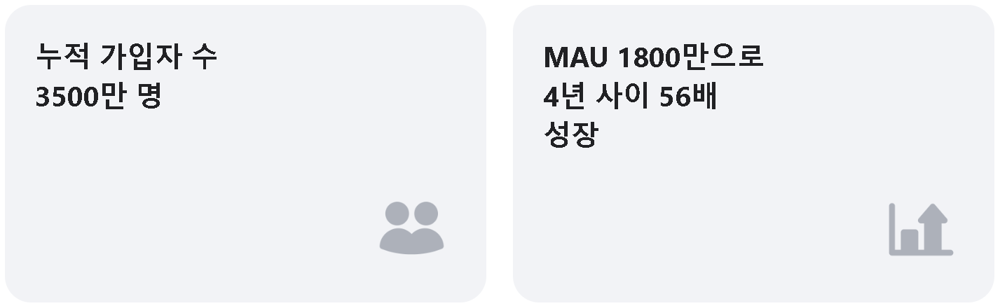
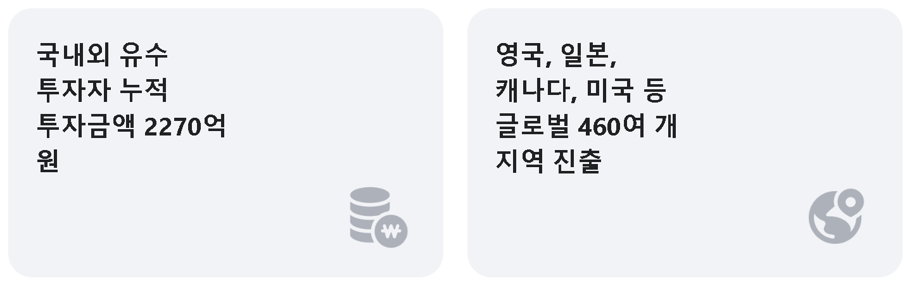

당근 팀에는 일에 몰입할 때 즐거움을 느끼는 사람들이 모였습니다. 개인은 자신의 역량을 마음껏 발휘하고 팀은 서로의 잠재력을 최대로 끌어내면서, 혼자서는 상상할 수 없던 눈부신 성장을 함께 이루어가고 있습니다.
당근은 동네의 가치에 주목합니다. 근처에 살고 있는 이웃과의 중고 직거래를 시작으로, 전에 없던 지역 생활 커뮤니티를 만들어나가고 있어요. 이웃들은 진짜 우리 동네 이야기를 주고받을 수 있고, 가게 사장님들은 이웃의 목소리를 가장 가까이서 들을 수 있지요. 거래, 모임, 홍보, 결제까지, 동네에서 일어나는 다양한 경험을 당근으로 연결하고 있습니다.
당근은 매일 새로운 역사를 쓰고 있어요.


중고거래로 시작된 당신 근처의 이야기
당근은 활발한 교류가 있는 지역 생활 커뮤니티를 꿈꿉니다. 누구나 동네에서의 즐겁고 따뜻한 연결을 경험할 수 있도록 하이퍼로컬의 새로운 길을 만들어가고 있습니다.